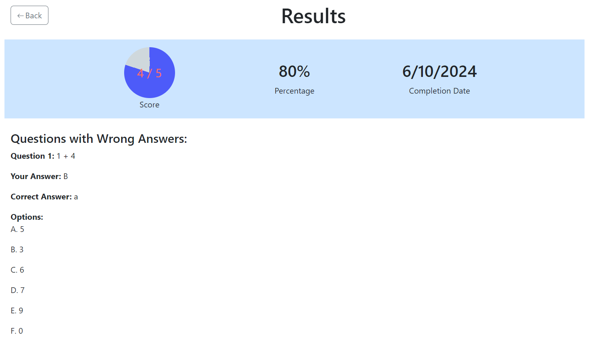

User Guide
Practice Guide
1. To start a practice, go to the "Start Practice" page. Select the file you want to use for the practice session and click "Load File".

2. After load the practice file, Select the practice mode(practice mode, for practice the question, or exam mode, force to asnwer all the question), question mode (practice all the question with order, random order or with selected questions) and select timer

3. Start practice with Practice mode, in practice mode, you can view the answer by click the Show Answer button on left bottom and if got not sure question you can mark it by click the mark button on the right side of the question.
4. Start practice with Exam mode, in Exam mode, you are force to answer the question then you can go to the next question and you are not allow to view for the answer for the question.
5. After submit question, it will show the result and the question with wrong Answer
